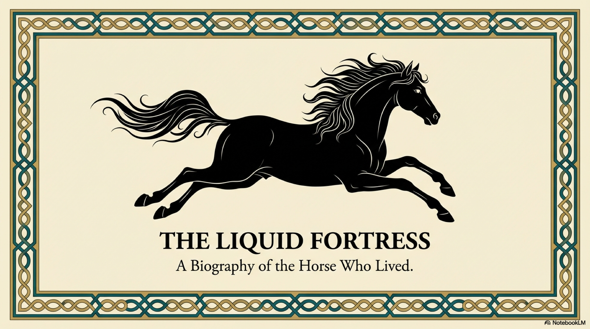
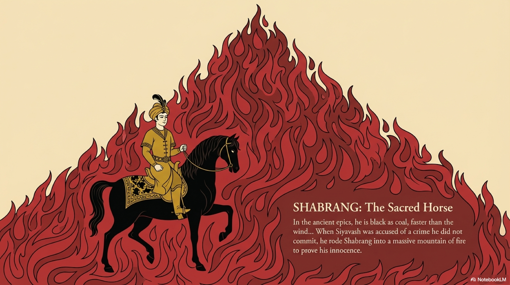
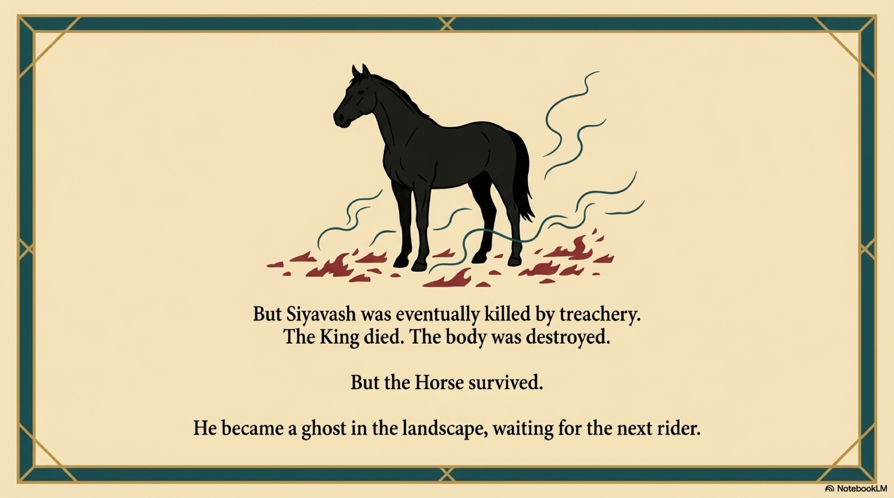
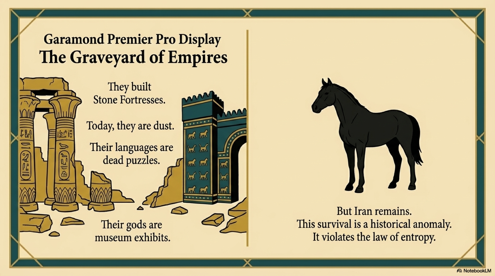

In the year 1095 AD, the most celebrated intellectual in the Islamic world, the head of the prestigious Nizamiyya University in Baghdad, stopped speaking.
Abu Hamid al-Ghazali was the pinnacle of the establishment. He was a master of jurisprudence, theology, and Aristotelian logic. He had memorized the Source Code of the empire. He was the supreme defender of the rational orthodoxy.
And then, one day in class, he physically could not utter a word.
His doctors diagnosed a physical ailment. Ghazali knew better. It was a Systemic Collapse.
He had looked into the heart of the Avicennian logic that sustained the Golden Age, and he had seen the abyss. He realized that reason—the tool he had spent his life sharpening—was a closed loop. It could prove A leads to B, but it could not prove why A existed in the first place. It could map the cage, but it could not open the door.
Ghazali fled Baghdad. He abandoned his post, his wealth, and his fame. He wandered for ten years in the deserts of Syria and the sanctuaries of Mecca, searching for the missing piece of the human soul.

Before his crisis, Ghazali wrote a book that changed the course of history: The Incoherence of the Philosophers.
Western historians often paint this as an attack on science. It was not. It was a rigorous, logical audit of the limits of Logic itself.
Ghazali used the tools of Level 4, The Map, to dismantle the arrogance of The Map.
He argued that the philosophers claimed to know the nature of God and the Universe through pure deduction. But their arguments relied on unproven axioms. They were building castles in the air. They assumed that the structure of the Human Mind was identical to the structure of Reality.
Ghazali proved that there is a Gap.
In our framework, he identified the Incompleteness of the rational mind. A logical system cannot prove its own consistency. If you try to base your entire civilization on Reason alone, you eventually hit a wall of infinite regress. You generate Epistemic Entropy. You end up with skepticism, doubt, and the dry, brittle nihilism that Khayyam felt when he looked at the stars.
Logic is a processor. It is not a sensor. It cannot generate Truth; it can only arrange it.

Ghazali returned from his wandering with a new answer. He wrote a massive work called The Revival of the Religious Sciences.
His solution was Sufism.
He did not reject Reason; he continued to use logic for law and theology. But he demoted it. He argued that the only organ capable of perceiving Ultimate Reality is not the Brain, but the Heart, or Qalb.
In the Persian context, the "Heart" is not just the seat of emotion, which is Level 3. It is the organ of Direct Perception, bordering on Level 6.
Ghazali argued for Taste, or Dhwan. You can read a thousand books about honey, you can analyze its chemical composition, you can prove its existence logically. But you do not know honey until you taste it.
Reason is the map. Taste is the territory.
Ghazali’s crisis saved the Persian Mind from becoming a dry, sterile technocracy. He re-injected the Vitality of Experience. He legitimized the mystic path, not as a rebellion against the law, but as the fulfillment of the law.

But Ghazali left a problem.
He had successfully divided the world into two domains. First, the Rational World, governed by Logic and Law. Second, the Mystical World, governed by Revelation and Taste.
He had bridged them in his own life, but he hadn't built a bridge for the civilization. There was still a chasm between the Philosopher and the Mystic. The intellect and the intuition were still speaking different languages.
The system was safe, but it was dualistic. It lacked a connecting medium. It needed a layer of reality that was like a thought—immaterial—but also like a thing—observable. It needed a place where the abstract truths of logic could take on the visible forms of the soul.
It needed The Imaginal.
And in the mountains of northwestern Iran, a young genius was about to discover it. He would wear strange clothes, claim to speak to Plato in dreams, and write in a language of blinding light.
His name was Suhrawardi. And he was the Architect of the next floor.